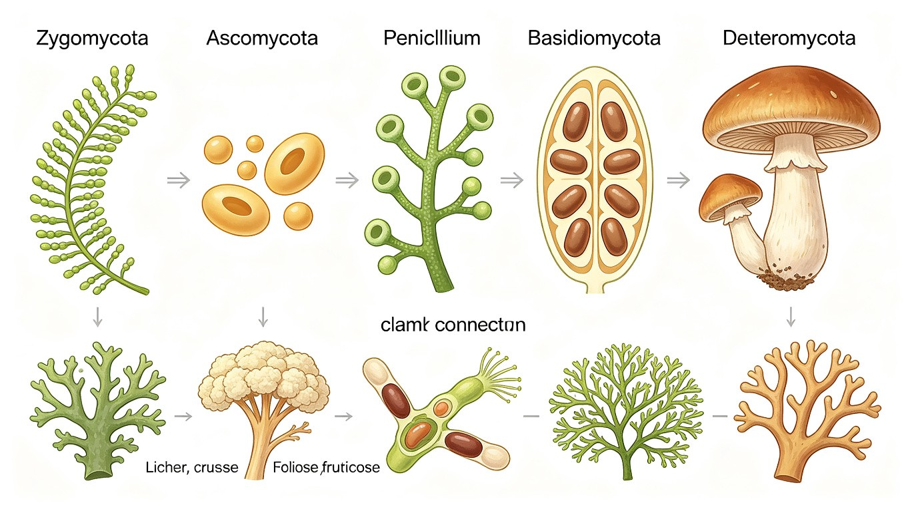

第四节 真菌（Fungi）—— 真核微生物
一、真菌概述
真菌（Fungi）是真核微生物，具有真正的细胞核和膜包被细胞器。真菌细胞壁成分为几丁质（chitin）（与植物细胞壁的纤维素、细菌细胞壁的肽聚糖截然不同），这是真菌分类的重要化学标志。真菌的细胞膜含麦角固醇（ergosterol）（而非胆固醇——动物），这是抗真菌药物（如两性霉素B、氟康唑）的重要靶点。
真菌的营养方式为异养吸收（heterotrophic absorption）：分泌胞外酶分解有机物，然后吸收小分子营养物质。真菌的营养体为菌丝（hypha），菌丝集合体为菌丝体（mycelium）。菌丝分为无隔菌丝（coenocytic hypha，如接合菌）和有隔菌丝（septate hypha，如子囊菌、担子菌）。
真菌的繁殖方式极其多样：无性繁殖（分生孢子conidia、孢囊孢子sporangiospore、芽殖budding、裂殖fission、菌丝断裂）和有性生殖（接合、子囊孢子、担孢子）。

二、真菌四大门分类
| 特征 | 接合菌门 | 子囊菌门 | 担子菌门 | 半知菌门 |
|---|---|---|---|---|
| 有性孢子 | 接合孢子（zygospore） | 子囊孢子（ascospore） | 担孢子（basidiospore） | 未发现（或已丢失） |
| 有性结构 | 接合孢子囊 | 子囊（ascus，通常8个孢子） | 担子（basidium，通常4个孢子） | 无 |
| 菌丝类型 | 无隔菌丝（coenocytic） | 有隔菌丝（septate） | 有隔菌丝，有锁状联合 | 有隔菌丝（多为子囊菌无性型） |
| 无性繁殖 | 孢囊孢子 | 分生孢子（conidia） | 罕见（少数产分生孢子） | 分生孢子为主 |
| 子实体 | 无（或简单） | 子囊果（闭囊壳/子囊壳/子囊盘） | 担子果（蘑菇/木耳/灵芝等） | 无或分生孢子器 |
| 代表 | 根霉（Rhizopus）、毛霉（Mucor） | 酵母菌（Saccharomyces）、曲霉（Aspergillus）、青霉（Penicillium）、冬虫夏草（Cordyceps） | 蘑菇（Agaricus）、灵芝（Ganoderma）、木耳（Auricularia）、锈菌（Puccinia） | 大多数医学真菌（如皮肤癣菌、白色念珠菌） |
| 约种数 | ~1,000 | ~64,000 | ~32,000 | ~25,000 |
接合菌门（Zygomycota）：最原始的真菌类群。无隔菌丝，有性生殖通过配子囊接合形成接合孢子（厚壁、抗逆性强的休眠孢子）。根霉（Rhizopus stolonifer）是最常见的接合菌，俗称面包霉。根霉的匍匐菌丝（stolon）与假根（rhizoid）交替出现，无性繁殖产生孢囊孢子（sporangiospore）。
子囊菌门（Ascomycota）：最大的真菌门类。有隔菌丝，有性生殖产生子囊（ascus），每个子囊通常含8个子囊孢子（经减数分裂+一次有丝分裂）。子囊果（ascocarp）类型：闭囊壳（cleistothecium）封闭球状（如曲霉有性型）、子囊壳（perithecium）瓶状有孔口（如冬虫夏草）、子囊盘（apothecium）盘状开口（如盘菌）。
担子菌门（Basidiomycota）：产生担子（basidium），每个担子通常产生4个担孢子（减数分裂后形成）。菌丝有锁状联合（clamp connection）——担子菌特有的菌丝结构，保证双核菌丝中每个细胞都含有两个不同交配型的核。担子果（basidiocarp）即我们常说的"蘑菇"。
半知菌门（Deuteromycota / Fungi Imperfecti）：仅发现无性阶段，有性阶段未知或已丢失。大多数医药和农业上的病原真菌归入此类。分子系统学表明大多数半知菌属于子囊菌的无性型（anamorph）。如青霉（Penicillium）的无性型为青霉属，有性型为篮状菌属（Talaromyces）。
三、酵母菌（Yeast）
酵母菌是单细胞真菌，主要属于子囊菌门（如酿酒酵母Saccharomyces cerevisiae）和少数担子菌门。酵母菌是第一个被全基因组测序的真核生物（1996年，S. cerevisiae，约12 Mb，约6000个基因），是分子生物学和细胞生物学的重要模式生物。
- 繁殖方式：
- 出芽繁殖（budding）：最常见的无性繁殖方式。母细胞表面突起形成芽体，核分裂后一个子核进入芽体，芽体长大后脱离。酿酒酵母为多端出芽（multilateral budding）。
- 裂殖（fission）：如粟酒裂殖酵母（Schizosaccharomyces pombe），通过二分裂方式繁殖，是研究细胞周期调控的经典模式生物（Paul Nurse, 2001诺贝尔奖）。
- 有性生殖：不同交配型（a型和α型）融合→形成二倍体→减数分裂→子囊+4个子囊孢子。
- Crabtree效应 vs Pasteur效应：
- Pasteur效应：有氧条件下，呼吸抑制发酵，葡萄糖消耗减少。大多数兼性厌氧微生物遵循此规律。
- Crabtree效应：高浓度葡萄糖时，即使在有氧条件下，酵母菌也优先进行乙醇发酵（有氧发酵），而非完全氧化。这是酿酒酵母的特征性代谢方式，也是工业酒精发酵的基础。机制：高糖条件抑制呼吸链相关酶的表达，同时糖酵解速率超过三羧酸循环和氧化磷酸化能力。
- 应用：酿酒、面包发酵、酒精燃料、单细胞蛋白（SCP）、维生素B族生产、基因工程（真核表达系统，如乙肝疫苗HBsAg、HPV疫苗）。
四、真菌有性生殖的三个阶段
真菌的有性生殖经历三个典型阶段，这是真菌区别于其他生物的独特特征：
- 质配（plasmogamy）：两个交配型（mating type）的细胞或菌丝融合，细胞质合并，但细胞核不融合。形成双核期（dikaryon, n+n）——每个细胞含两个不同来源的单倍体核。子囊菌的双核期较短，担子菌的双核期可长达数年（在菌丝体中持续生长）。
- 核配（karyogamy）：两个单倍体核融合形成二倍体合子核（2n）。在子囊菌和担子菌中，核配在子囊母细胞或担子母细胞中发生。
- 减数分裂（meiosis）：二倍体核经减数分裂形成单倍体孢子（n）。在子囊菌中，减数分裂后通常还有一次有丝分裂，产生8个子囊孢子。在担子菌中，减数分裂后形成4个担孢子。
五、子实体类型
子实体（fruiting body）是真菌产生有性孢子的结构。子囊菌的子实体称为子囊果（ascocarp），担子菌的子实体称为担子果（basidiocarp）。子囊果有三种类型：
- 闭囊壳（cleistothecium）：完全封闭的球形结构，子囊随机分布其中，子囊孢子通过子囊壳破裂释放。代表：曲霉有性型（Eurotium）、青霉有性型（Talaromyces）。
- 子囊壳（perithecium）：瓶状或梨形，顶端有孔口（ostiole），子囊排列在底部（子实层hymenium），孢子通过孔口释放。代表：冬虫夏草（Ophiocordyceps）、脉孢菌（Neurospora，遗传学模式生物）。
- 子囊盘（apothecium）：盘状或杯状，子囊排列在盘面上，子实层暴露在外。代表：盘菌（Peziza）、羊肚菌（Morchella，子囊盘呈蜂窝状）。
担子果（basidiocarp）：担子菌的子实体，担子排列在子实层上。常见类型：伞菌型（蘑菇）、多孔菌型（灵芝）、珊瑚菌型、胶质菌型（木耳、银耳）、腹菌型（马勃、鬼笔）。
六、真菌与人类的关系
真菌与人类的关系极为密切，涵盖食品、医药、农业和工业等多个领域：
- 抗生素：
- 青霉素（Penicillin）：Fleming（1928）发现，产黄青霉（Penicillium chrysogenum）产生。抑制细菌细胞壁肽聚糖合成（转肽酶抑制剂）。
- 头孢菌素（Cephalosporin）：顶头孢霉（Cephalosporium acremonium）产生。
- 环孢霉素（Cyclosporin A）：丝状真菌Tolypocladium inflatum产生，免疫抑制剂（抑制T细胞活化），用于器官移植抗排斥。
- 洛伐他汀（Lovastatin）：土曲霉（Aspergillus terreus）产生，HMG-CoA还原酶抑制剂，降胆固醇药物。
- 真菌毒素（Mycotoxin）：
- 黄曲霉毒素（Aflatoxin）：黄曲霉（Aspergillus flavus）和寄生曲霉产生，强致癌物（尤其致肝癌）。黄曲霉毒素B1是已知最强的天然致癌物之一，经肝脏P450酶代谢活化后与DNA共价结合形成加合物。常见于发霉的花生、玉米、坚果。
- 麦角碱（Ergot alkaloid）：麦角菌（Claviceps purpurea）感染黑麦等谷物产生。含麦角酸衍生物，引起血管收缩和神经症状（"圣安东尼之火"）。麦角碱衍生物用于治疗偏头痛（如麦角胺）和产后止血（如麦角新碱）。LSD（麦角酸二乙酰胺）是麦角酸的半合成衍生物。
- 赭曲霉毒素（Ochratoxin）：肾毒性。
- 单端孢霉烯族毒素（Trichothecene）：镰刀菌（Fusarium）产生，抑制蛋白质合成。
- 食用菌：蘑菇（双孢蘑菇Agaricus bisporus）、香菇（Lentinula edodes）、平菇（Pleurotus）、金针菇（Flammulina）、木耳（Auricularia）、银耳（Tremella）、灵芝（Ganoderma）。
- 食品发酵：酱油（米曲霉Aspergillus oryzae）、豆豉、腐乳（毛霉/根霉）、面包（酵母）、酒类（酵母+曲霉）。
七、地衣（Lichen）—— 真菌与藻类的共生体
地衣（Lichen）是真菌（mycobiont）与藻类/蓝藻（photobiont）的共生体。真菌菌丝紧密包裹藻类细胞，形成稳定的共生结构。共生关系中，真菌提供水分、矿物质和保护，藻类/蓝藻提供光合产物（碳水化合物）。地衣不是单一生物，而是"共生功能体"（holobiont）。
- 地衣形态类型：
- 壳状地衣（crustose）：紧贴基质，如地图衣（Rhizocarpon geographicum）、文字衣（Graphis）。难以从基质剥离。
- 叶状地衣（foliose）：叶片状，下面有假根或脐状突起附着，如梅衣（Parmelia）、地卷（Peltigera）。
- 枝状地衣（fruticose）：直立或悬垂的枝状体，如松萝（Usnea）、石蕊（Cladonia）。
- 生态意义：先锋生物——地衣是岩石风化和土壤形成的先锋生物，分泌地衣酸溶解岩石，促进成土过程。地衣对空气污染（特别是SO₂）极为敏感，是大气质量的生物指示物（bioindicator）。
- 地衣中的共生伙伴：真菌多为子囊菌（>98%），少数为担子菌。藻类包括绿藻（如共球藻Trebouxia）和蓝藻（如念珠藻Nostoc）。含蓝藻的地衣可固氮。
- 地衣的繁殖：无性繁殖——粉芽（soredium，菌丝包裹少量藻细胞）、裂芽（isidium）。有性生殖——仅真菌产生子实体（子囊盘），孢子释放后需重新捕获藻细胞形成新地衣。
- 应用：石蕊试纸（litmus paper）来源于地衣提取物；松萝酸（usnic acid）具有抗菌活性；地衣在极地是驯鹿冬季主要食物（"驯鹿地衣"Cladonia rangiferina）。
八、菌根（Mycorrhiza）—— 真菌与植物根的共生
菌根（Mycorrhiza）是真菌菌丝与植物根的共生体，约90%的维管植物与真菌形成菌根。真菌帮助植物吸收水分和矿物质（特别是磷），植物提供碳水化合物。主要类型：
- 外生菌根（Ectomycorrhiza, EM）：真菌菌丝在根表面形成菌套（mantle），并在皮层细胞间隙形成哈蒂氏网（Hartig net），但不进入细胞内部。真菌多为担子菌和子囊菌。宿主主要为温带森林树种（松科、壳斗科、桦木科）。
- 丛枝菌根（Arbuscular mycorrhiza, AM）：真菌菌丝进入根皮层细胞，形成丛枝状结构（arbuscule）和泡囊（vesicle）。丛枝是营养交换的主要场所。AM真菌属于球囊菌门（Glomeromycota），是最古老的菌根类型（化石记录可追溯至4亿年前），可能与早期陆地植物的登陆相关。约80%的维管植物形成AM。
- 其他类型：杜鹃花类菌根（Ericoid mycorrhiza，杜鹃花科）、兰科菌根（Orchid mycorrhiza，兰花种子萌发依赖真菌）。
第四节 真菌 — 必背考点总结
- 真菌特征：真核、细胞壁几丁质、膜含麦角固醇、异养吸收。营养体为菌丝体。无性繁殖（分生孢子/芽殖/孢囊孢子）和有性生殖（接合/子囊孢子/担孢子）。
- 四大门：接合菌（无隔菌丝/接合孢子/根霉毛霉）→子囊菌（8个子囊孢子/子囊果三类型/酵母菌/青霉/曲霉）→担子菌（4个担孢子/锁状联合/担子果/蘑菇）→半知菌（无有性阶段/多为子囊菌无性型）。
- 酵母菌：单细胞真菌，出芽繁殖。Crabtree效应（有氧发酵，高糖促发酵）vs Pasteur效应（有氧抑发酵）。酿酒酵母模式生物，1996年全基因组测序。
- 有性生殖三阶段：质配（n+n双核）→核配（2n）→减数分裂（n孢子）。担子菌双核期最长，通过锁状联合维持。
- 真菌与人类：青霉素（Fleming 1928，转肽酶抑制剂）、环孢霉素（免疫抑制剂）、黄曲霉毒素B1（最强天然致癌物→p53 G→T突变）、麦角碱（LSD来源）。
- 地衣：真菌+藻类/蓝藻共生体。壳状/叶状/枝状三形态。先锋生物，SO₂污染指示生物。粉芽/裂芽无性繁殖。
- 菌根：EM（外生菌根，菌套+哈蒂氏网）vs AM（丛枝菌根，进入细胞，最古老，80%维管植物）。AM真菌专性共生，不可纯培养。菌根网络（CMN）连接植物个体。
高中教材衔接 · 课标对应
人教版高中生物对真菌的覆盖：
- 必修1《分子与细胞》第1章：真核生物的代表类群——真菌（菌物界）属于真核生物，与植物、动物、原生生物并列四大真核类群之一。真菌的细胞结构有以核膜为界限的真正的细胞核，有线粒体、内质网、高尔基体等多种复杂细胞器。
- 必修1第2章"组成细胞的分子"：真菌细胞壁的成分与植物细胞壁（纤维素）不同——真菌细胞壁主要由几丁质（chitin）（N-乙酰葡糖胺通过 β-1,4 糖苷键连接的聚合物）构成，少数酵母（如裂殖酵母 Schizosaccharomyces）含葡聚糖。
- 必修1第3章"细胞膜"：真菌细胞膜含麦角固醇（ergosterol）作为主要甾醇（vs 动物细胞含胆固醇，植物细胞含植物甾醇如豆固醇）。麦角固醇是抗真菌药物（如两性霉素 B、酮康唑、咪康唑）的作用靶点。
- 必修1第5章"细胞的能量供应"：真菌的异养营养——腐生（saprophytic，如蘑菇分解枯枝落叶）、寄生（parasitic，如冬虫夏草感染蝙蝠蛾幼虫）、共生（symbiotic，如菌根 mycorrhiza 与植物根共生、地衣 lichen 中真菌与蓝藻/绿藻共生）。真菌无线粒体有氧呼吸时将葡萄糖完全氧化为 CO2 + H2O；无氧呼吸时产生酒精（酵母）或乳酸。
- 必修1第6章"细胞的生命历程"：酵母的出芽生殖（budding）——母细胞表面出芽 → 芽体长大 → 核分裂 → 芽体分离。酿酒酵母 Saccharomyces cerevisiae 是"真核生物的大肠杆菌"——分子生物学、细胞生物学的模式生物。
- 选择性必修3《生物技术与工程》第3章：酵母菌在传统生物技术中的应用——酿酒（葡萄酒、啤酒）、面包发酵、酱油、馒头；现代生物技术中的酵母表达系统（毕赤酵母 Pichia pastoris 用于重组蛋白表达）。
- 选修/课后扩展：大型真菌——蘑菇、香菇、木耳、灵芝、冬虫夏草、茯苓等是高中常见的"食用菌/药用菌"。青霉菌（Penicillium）发现青霉素（Fleming 1928）开创了抗生素时代。
课标 vs 竞赛的差距：
- 课标只要求"知道真菌是具有真核和细胞壁的生物"和"酵母菌的发酵"，竞赛要求：①真菌分类——壶菌门（Chytridiomycota，含鞭毛，水生）、接合菌门（Zygomycota，如根霉、毛霉）、子囊菌门（Ascomycota，最大门，含酵母、青霉、曲霉、麦角菌、羊肚菌、冬虫夏草）、担子菌门（Basidiomycota，含蘑菇、银耳、灵芝、玉米黑粉菌）、微孢子虫（Microsporidia，原生动物/真菌的分类争议）。②真菌繁殖——无性繁殖（孢子如分生孢子 conidia、孢子囊孢子 sporangiospores、节孢子 arthrospores、芽殖 budding）+ 有性繁殖（质配 → 核配 → 减数分裂 → 子囊孢子 ascospores / 担孢子 basidiospores）。③真菌生活史——同宗配合（homothallic，如酿酒酵母，无性融合也能完成有性周期）vs 异宗配合（heterothallic，需不同交配型 MATa / MATα）。④子囊菌有性周期——酵母 MATa 与 MATα 信息素（pheromone）相互识别 → 形成合子 → 减数分裂产生 4 个子囊孢子；曲霉（Aspergillus）形成闭囊壳（cleistothecium）/ 子囊壳（perithecium）含 8 个子囊孢子。⑤担子菌生活史——单倍体菌丝（n）+ 二倍体菌丝（n+n 双核 dikaryon）→ 核配（短暂）→ 减数分裂 → 担子 + 担孢子（4 个外生）。蘑菇子实体（fruiting body）含菌盖（pileus）+ 菌褶（gills，产担孢子处）+ 菌柄（stipe）+ 菌环（annulus）+ 菌托（volva）。⑥菌根（mycorrhiza）——丛枝菌根（AM, arbuscular mycorrhiza，源于球囊菌门 Glomeromycota，与 80% 陆生植物共生）和外生菌根（ectomycorrhiza，担子菌为主，与松柏科、杨柳科共生）。
- 课标不涉及的：①真菌无性繁殖的"分生孢子器（conidiophore）"结构（青霉的帚状枝 brush-like conidiophore；曲霉的球状泡囊 + 链状分生孢子）；②次级代谢产物——青霉素（penicillin, β-内酰胺类）、头孢菌素（cephalosporin）、麦角碱（ergot alkaloid, 麦角菌 Claviceps 寄生黑麦，引起麦角中毒 ergotism，中世纪圣安东尼之火）、黄曲霉毒素（aflatoxin, 黄曲霉 Aspergillus flavus 产，最强天然致癌物，致肝癌）；③真菌毒素对农业的影响——稻瘟病（Magnaporthe oryzae）、小麦锈病（Puccinia spp.）、马铃薯晚疫病（Phytophthora infestans, 卵菌，类似真菌但归入茸鞭毛生物 stramenopiles，1845 年爱尔兰大饥荒的元凶）；④真菌二态性（dimorphism）——如荚膜组织胞浆菌（Histoplasma capsulatum）在 25°C 是丝状菌（霉相 mold），37°C 是酵母相（yeast）——这是其在人体内致病的机制。
2025 / 2026 联赛 · 初赛真题链接
本章重难点深度解析
重难点 1：真菌的五大门类与生活史对比
真菌界（Kingdom Fungi）有 5 大门，外加与真菌形态相似的"类真菌生物（fungus-like protists）"（如卵菌、黏菌）：
- 壶菌门（Chytridiomycota）：最古老的真菌。多数水生，产生有鞭毛的游动孢子（zoospore）（单鞭毛或后鞭毛），是唯一有运动细胞阶段的真菌。代表：壶菌（Chytrid）。壺菌 Batrachochytrium dendrobatidis 引起全球两栖动物壶菌病（chytridiomycosis），导致青蛙大量死亡，是生物多样性危机的元凶之一。
- 接合菌门（Zygomycota）：以"接合孢子（zygospore）"得名。无性繁殖产生孢子囊孢子（sporangiospores），产自孢子囊（sporangium）。有性繁殖时两个配子囊（gametangia）融合形成合子 → 减数分裂 → 接合孢子（厚壁抗逆）。代表：根霉（Rhizopus stolonifer, 面包霉）、毛霉（Mucor）。
- 子囊菌门（Ascomycota）：真菌界最大的门，含 64,000+ 物种（占真菌 60%+）。特征是形成"子囊（ascus）"——囊状结构含子囊孢子（ascospores，通常 8 个）。重要代表：①酵母（Saccharomyces, Candida, Schizosaccharomyces）；②曲霉（Aspergillus, 含黄曲霉 A. flavus 产黄曲霉毒素、烟曲霉 A. fumigatus 致肺曲霉病）；③青霉（Penicillium, 含产黄青霉 P. chrysogenum 产青霉素、特异青霉 P. notatum 原始发现）；④麦角菌（Claviceps purpurea, 寄生黑麦产麦角碱）；⑤冬虫夏草（Ophiocordyceps sinensis, 寄生蝙蝠蛾幼虫）；⑥羊肚菌（Morchella, 食用菌）；⑦虫草属（Ophiocordyceps unilateralis 感染蚂蚁形成"僵尸蚂蚁"）；⑧赤霉菌（Gibberella, 产赤霉素 gibberellin）。子囊菌的子实体类型：闭囊壳（cleistothecium, 闭合球形）、子囊壳（perithecium, 瓶状有孔口）、子囊盘（apothecium, 杯状或盘状）。
- 担子菌门（Basidiomycota）：含蘑菇、木耳、银耳、灵芝、猴头菇、玉米黑粉菌、锈菌、黑粉菌等。特征是形成"担子（basidium）"——棒状结构经核配 → 减数分裂 → 4 个外担孢子。担子菌有双核菌丝（dikaryon, n+n）作为营养阶段——核配短暂，形成后立即减数分裂。重要代表：①蘑菇（Agaricus bisporus, 双孢蘑菇）；②香菇（Lentinula edodes）；③灵芝（Ganoderma lucidum, 药用菌，含灵芝多糖、三萜类）；④银耳（Tremella fuciformis）；⑤玉米黑粉菌（Ustilago maydis, 引起玉米瘤）；⑥小麦锈菌（Puccinia graminis, 引起小麦秆锈病，含五种孢子阶段 0, I, II, III, IV）；⑦毒蝇鹅膏（Amanita muscaria, 毒蘑菇，含鹅膏蕈氨酸）；⑧鬼笔（Phallus impudicus）。
- 微孢子虫（Microsporidia）：专性细胞内寄生的极小真核生物（1-4 μm），无线粒体（有线粒体衍生的 mitosome）、无高尔基体。从孢子注入极丝（polar tube）将胞质注入宿主细胞。代表：家蚕微孢子虫（Nosema bombycis）、人肠道微孢子虫（Enterocytozoon bieneusi，艾滋病患者机会感染）。分类有争议——曾归入原生动物，现多归入真菌。
- 类真菌生物：①卵菌（Oomycota）——水霉、疫霉（Phytophthora）。细胞壁含纤维素（不是几丁质），生活史类似真菌但 rRNA 序列与茸鞭毛生物（stramenopiles, 含硅藻、金藻）更近。马铃薯晚疫病（P. infestans）是 1845 年爱尔兰大饥荒的元凶，导致 100 万人饿死，200 万人移民美国。②黏菌（Myxomycetes）——变形虫阶段 + 子实体阶段，可形成多核合胞体（plasmodium）。代表：多头绒泡菌 Physarum polycephalum（用于计算生物学研究，可求解最短路径）。
重难点 2：酵母的生活史与分子生物学应用
酿酒酵母（Saccharomyces cerevisiae）是"真核生物的大肠杆菌"——分子生物学、细胞生物学的模式生物：
- 生活史：单倍体（n）和二倍体（2n）皆可营养生长（出芽生殖）。营养缺乏时二倍体经减数分裂产生 4 个子囊孢子（ascospores, 2 MATa + 2 MATα），形成"四分体（tetrad）"结构，是经典遗传学分析工具。交配型：MATa 产生 a 信息素 a-factor（13 残基脂肽，激活 Ste3 受体）；MATα 产生 α 信息素 α-factor（13 残基肽，激活 Ste2 受体）。信息素结合 → G 蛋白 → MAPK 级联 → 转录激活 → 形成合子。同宗配合（homothallic）：HML 和 HMR 沉默匣（silent cassettes）可通过 HO 核酸内切酶切换到 MAT 位点，使单个酵母细胞可转换交配型（HMLα/MATa/HMRa 三个匣位于 3 号染色体），实现同宗配合。异宗配合（heterothallic）：HO 缺失，MAT 稳定。
- 基因组与模式生物：S. cerevisiae 是第一个完成真核基因组测序的物种（1996 年 12.1 Mb，~6,275 个基因，16 条染色体，~5,800 个 ORF）。其基因密度高（72% 基因组为 ORF），含 ~250 个 tRNA 基因，~140 个 rDNA 串联重复。大量遗传工具：酵母双杂交（yeast two-hybrid）检测蛋白-蛋白相互作用；酵母人工染色体（YAC）作为大片段克隆载体；酵母基因敲除（gene knockout）通过同源重组取代 ORF（用 KanMX4 抗性标记）；GFP 融合蛋白在活细胞中实时定位。
- 应用：①传统——酿酒、面包、酱油；②现代——重组蛋白表达（乙肝疫苗 HPV 表面抗原、胰岛素、干扰素）；③CRISPR-Cas9 基因编辑（金黄色葡萄球菌 Cas9 + tracrRNA + crRNA 简化为 sgRNA，在酵母中效率极高）；④合成生物学——人工合成酵母基因组（Sc2.0 项目，2017 年完成 5 条合成染色体，2018 年 Boeke 等报道第 6 条 synX）；⑤寿命研究——酵母作为细胞衰老的模式（Sir2 沉默因子、雷帕霉素 TOR 通路、热量限制 CR 延寿）。
重难点 3：真菌的次级代谢产物与药物
真菌次级代谢产物种类繁多，结构奇特，生物活性强，是药物和毒素的重要来源：
- 青霉素（penicillin）：产黄青霉（Penicillium chrysogenum, 原 P. notatum）产 β-内酰胺类抗生素。Fleming 1928 年偶然发现（葡萄球菌培养皿被霉菌污染，霉菌周围葡萄球菌死亡），Florey & Chain 1940 年纯化，1945 年获诺贝尔生理学或医学奖。青霉素通过抑制细菌PBPs（青霉素结合蛋白），阻断肽聚糖的转肽反应（cross-linking）→ 细菌死亡。1943-1944 年在二战中拯救了 10 万+盟军士兵生命。后续发展出半合成青霉素（氨苄西林、阿莫西林）、头孢菌素类（cephalosporin，由顶头孢霉 Acremonium chrysogenum 产）。
- 麦角碱（ergot alkaloid）：麦角菌（Claviceps purpurea）寄生黑麦产生的麦角酸二乙酰胺（LSD）前体。麦角碱引起"麦角中毒（ergotism）"——中世纪欧洲"圣安东尼之火"（肢体坏疽、幻觉、抽搐）——大批人因食用受污染的黑麦面包致病。麦角碱的结构启发 Albert Hofmann 1938 年合成 LSD，1943 年发现其强烈致幻作用。麦角碱也用作药物——麦角新碱（ergometrine）用于产后止血（刺激子宫收缩）、麦角胺（ergotamine）治疗偏头痛。
- 黄曲霉毒素（aflatoxin）：黄曲霉（Aspergillus flavus）和寄生曲霉（A. parasiticus）产生 B1, B2, G1, G2, M1 等多种毒素，是IARC 一类致癌物（最强天然致癌物）。B1 在肝中被 CYP450 代谢为环氧化物，与 p53 第 249 位密码子（AGG→AGT, Arg→Ser）形成加合物 → 抑制 p53 → 肝癌。受污染的玉米、花生在湿热环境中易滋生黄曲霉，历史上印度、非洲、东南亚肝癌高发与黄曲霉毒素密切相关。
- 环孢素 A（cyclosporine A）：瑞士山地的雪白白僵菌（Tolypocladium inflatum）产生的环状 11 氨基酸肽，强烈抑制 T 细胞活化。1970s 终末期器官移植的关键突破——使器官移植成功率从 < 20% 提升到 > 80%，挽救了无数肾、心、肝移植病人。机制：结合 cyclophilin 形成复合物，抑制 calcineurin 磷酸酶 → 抑制 NFAT 去磷酸化 → 抑制 IL-2 转录。
- 他汀类（statins）：桔青霉（Penicillium citrinum）的 compactin 和红曲霉（Monascus purpureus）的 lovastatin（monacolin K）——HMG-CoA 还原酶抑制剂，降低胆固醇合成，革命性治疗高脂血症和心血管病。第二代半合成的 atorvastatin（立普妥）是世界销量最大的处方药。
- 赤霉素（gibberellin）：水稻恶苗病病原菌藤仓赤霉（Gibberella fujikuroi, 无性型 Fusarium fujikuroi）产生。20 世纪 20-50 年代日本学者发现赤霉素可引起水稻徒长（恶苗病），后被开发为植物生长调节剂用于葡萄无籽化、麦芽糖化（啤酒酿造）等。赤霉素是植物五大激素之一（与生长素、细胞分裂素、脱落酸、乙烯并列）。
重难点 4：菌根与地衣——真菌的共生策略
- 菌根（mycorrhiza）：真菌与植物根的共生体，90% 陆生植物都有菌根。①丛枝菌根（AM, arbuscular mycorrhiza）——由球囊菌门（Glomeromycota）的真菌形成，最古老（约 4.5 亿年前，伴随陆生植物登陆）。菌丝穿透根皮层细胞形成"丛枝（arbuscule）"——高度分支的菌丝结构，增大接触面积（从 10 倍到 100 倍），用于营养交换：真菌给植物氮、磷（吸收效率提升 10-100 倍）、水分，植物给真菌光合碳（糖类）。这是植物登陆的关键适应。②外生菌根（ectomycorrhiza）——由担子菌（如牛肝菌 Boletus、蜡蘑 Laccaria）和子囊菌形成，主要与松科、壳斗科、桦木科、杨柳科共生。菌丝在根表面形成"菌鞘（mantle）"和根外菌丝网（Hartig net），不穿透细胞。菌根真菌的子实体（蘑菇）依赖宿主植物提供的碳——是真菌"种植业"。
- 地衣（lichen）：真菌（子囊菌为主，少数担子菌）与光合共生体（蓝藻如念珠藻、绿藻如共球藻 Trebouxia）形成的共生体。是最成功的共生体——可生长在岩石、沙漠、极地、树干、高山等极端环境（先锋生物），全球已知 25,000+ 种。地衣体（thallus）的形态：壳状（crustose, 紧贴基质）、叶状（foliose, 叶状分裂）、枝状（fruticose, 须状，如松萝 Usnea）。地衣通过代谢产物（地衣酸 lichen acids）缓慢风化岩石 → 土壤形成 → 演替起点。空气污染指示生物——SO2 敏感，污染区无地衣。
- 真菌抗药性：白色念珠菌（Candida albicans）——人体共生真菌，正常情况下无致病性，免疫缺陷时引起鹅口疮（口腔）、阴道念珠菌病。新型隐球菌（Cryptococcus neoformans）——艾滋病患者脑膜炎的主要病原，荚膜多糖是关键毒力因子。唑类（azole, 抑制 CYP51 羊毛甾醇 14-α-去甲基化酶）、棘白菌素（echinocandin, 抑制 β-1,3-葡聚糖合酶）、多烯类（两性霉素 B amphotericin B, 与麦角固醇结合形成孔）——三大抗真菌药物。抗真菌药研发滞后于抗细菌药，唑类耐药（CYP51 突变、外排泵）和棘白菌素耐药（FKS1 突变）日益严重。